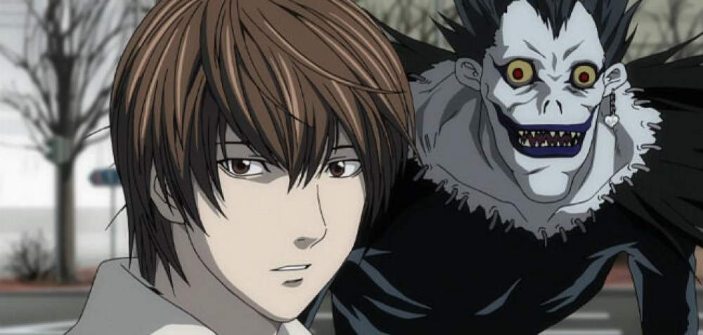
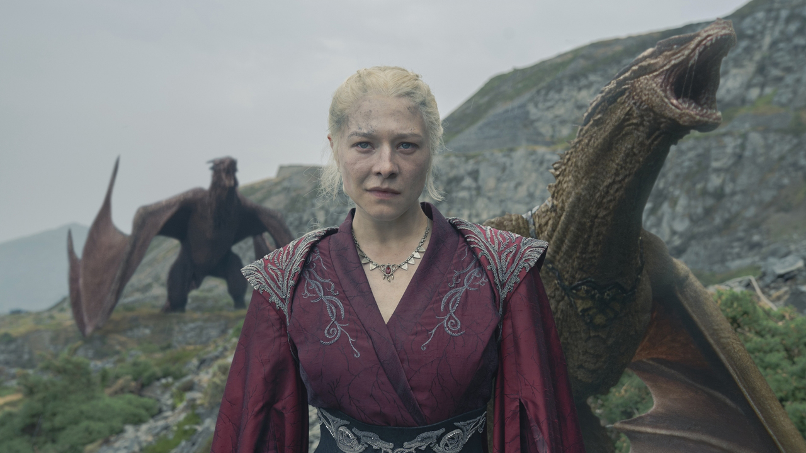
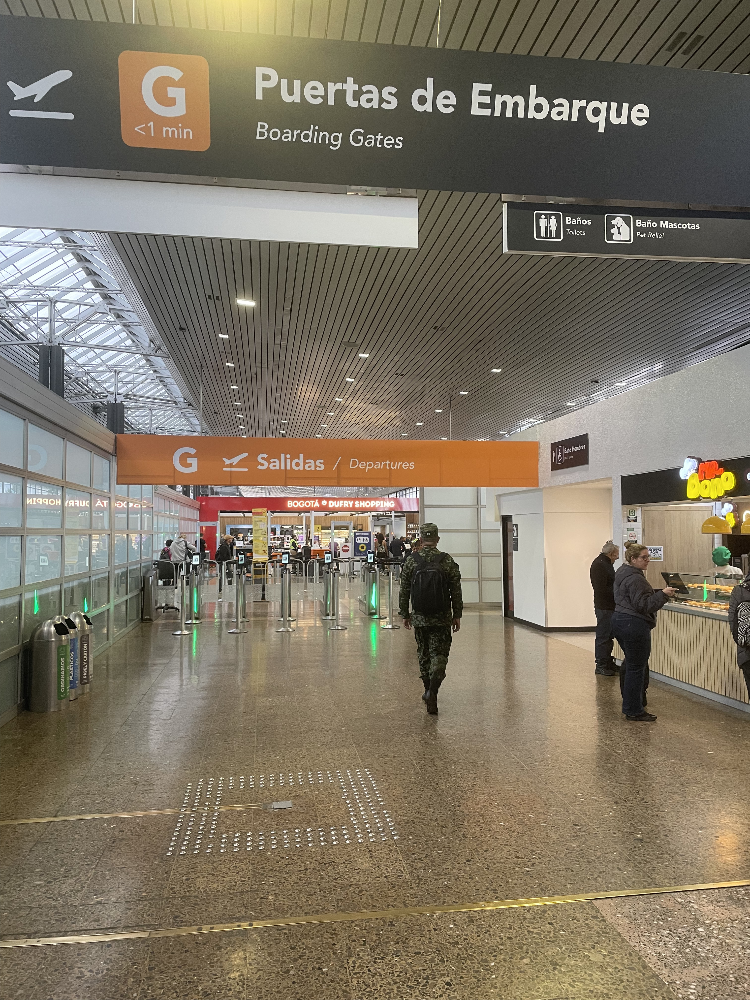

Tuve que entrar a OkCupid para comprobar cuándo fue el primer mensaje, entonces no hay necesidad de estar celosa. Hablamos hace exactamente:
Y como el día que estoy desarrollando esta web aún no tenemos fotos juntas por la distancia, pondré cualquier fotos y os dejo decidir después del viaje qué fotos se quedan aquí.
Y nos hemos estado extrañando por:
Nuestros recuerdos üå∏
Puedo recordar todas las veces que estábamos tristes o un poco molestos, pero comenzamos a unirnos y hacer esto:
Empezamos con Death Note:
Luego fuimos a jugar a PUBG juntos:

Y luego me lo mostraste y me volví adicto a El Desafío:
Y también terminamos viendo La Casa del Dragon:
Hasta pensamos en hacernos tatuajes de dragones juntos algún día (Dejo aquí el ejemplo para que nunca lo olvidemos):
Dejaré este espacio para que decidas cuál de nuestras fotos quieres agregar aquí:
Recuerdos acerca de nuestras Viajes üöÄ
Bogotá:



Cartagena de Las Indias:


Pero ahora algo que quería decirte ❤️
Creo que te sientes bien leyendo esto, y probablemente tengas esa expresión tímida que tienes al leerlo, pero quiero que sepas que lo hice con el corazón. La idea de este sitio es que actualicemos cada recuerdo y cada nuevo momento de nuestra relación.
Y también al desarrollar el sitio, me doy cuenta de que cada línea de código es solo para demostrar que eres una excelente persona, y que eres todo lo que busco.
Básicamente, dices que te hago mucho bien y que te trato demasiado bien, pero soy yo quien recibe el regalo de tener tu presencia cada día. Gracias por hacerme sonreír, olvidar mis problemas y hacerme una persona mejor y más segura. Despiertas lo mejor de mí cada día.
Pronto, tengo la certeza, que descubriremos nuevos horizontes alrededor del mundo! üöÄ Lo único que nos reconforta en medio de las dificultades es que nos tendremos el uno al otro. Y no necesitamos nada más.
Espero superar todos los problemas de la distancia contigo, te quiero muchissimoooo! ‚ù§Ô∏èüíê
Besitos, de tu brasile√±o favorito, Pedrinho! üíó